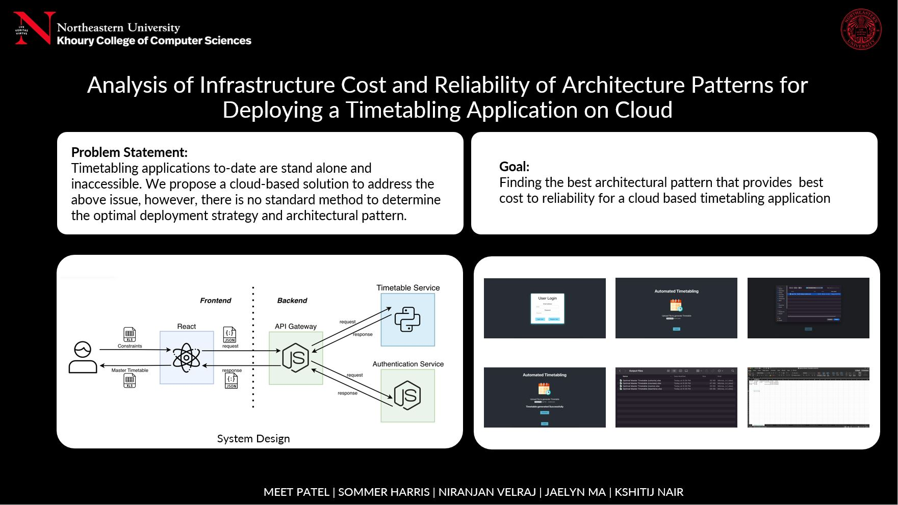
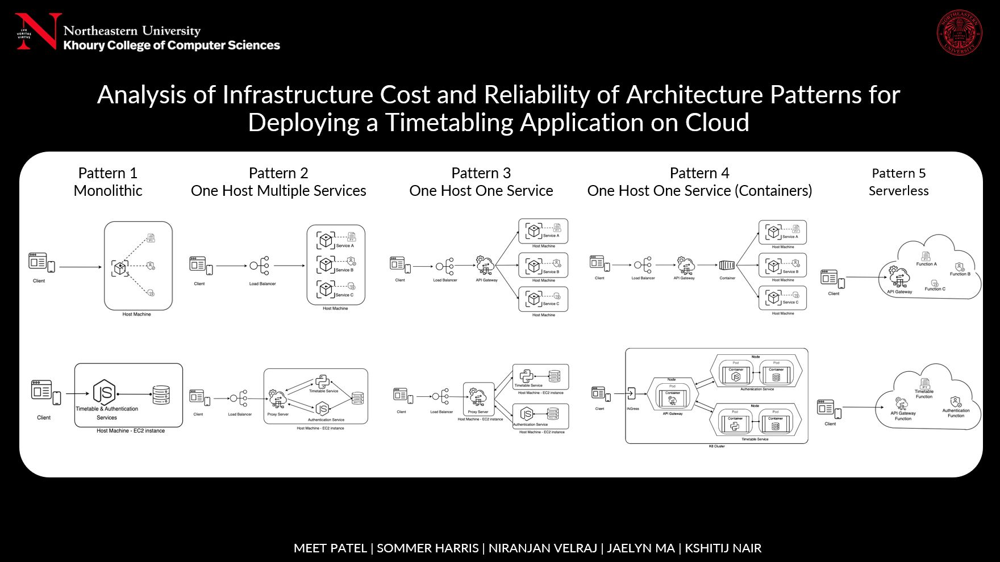
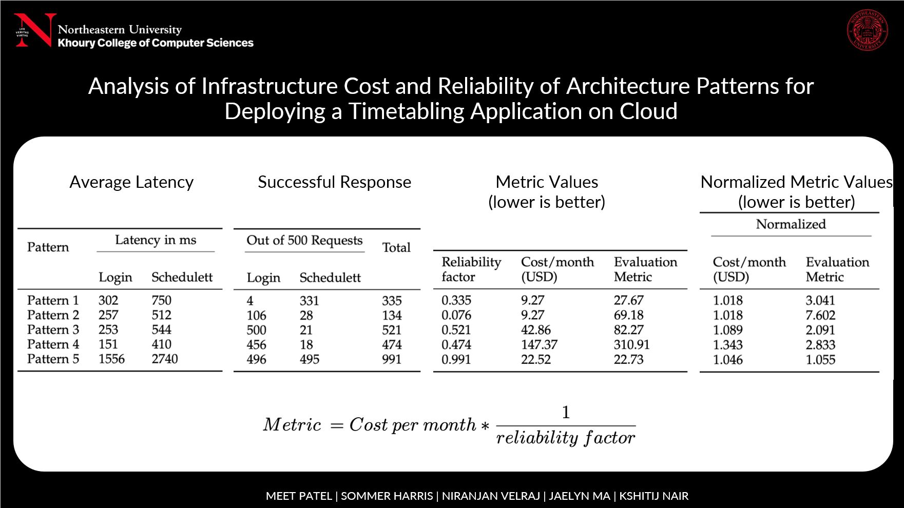

This project was completed as part of the business and tech research for an application our team developed. It was submitted as our capstone project for completion of our Masters in Computer Science Degrees, and has since been submitted to the conference Advancing Technology, Research, and Collaboration (ACM). You can view our paper here.
For this research, we developed a minimum viable product for the timetabling application, and then tested the reliability and cost for deploying various internal architecture patterns to AWS. You can find view the MVP demo video that one of my colleagues created here (or at this link):
The timetabling application takes in scheduling constraints and options in an excel file, and spits out a fully constructed schedule that adheres optimally to those constraints. The timetabling is meant to be used in the high school context, and was developed in collaboration with our colleague Richard Hoshino's work.
  